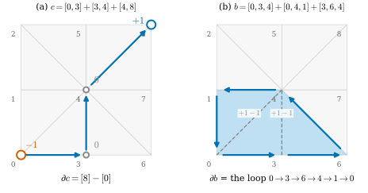
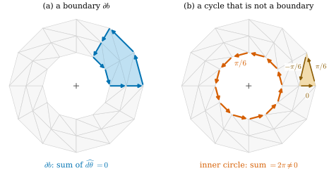

36.2 Chains and Cochains
Goals
- oriented simplex의 linear combination인 chain을 정의하고, boundary operator \(\partial\)가 orientation의 선택과 무관하게 잘 정의됨을 보일 수 있다.
- \(\partial\circ\partial = 0\)을 완전하게 증명하고, mesh에서 \(\partial\)의 행렬이 signed incidence matrix의 transpose임을 보일 수 있다.
- discrete form을 chain 위의 linear functional(cochain)로 보고, de Rham map이 “chain 위의 적분”임을 설명할 수 있다.
- coboundary operator를 \(\partial\)의 dual map으로 정의하고, cycle과 boundary를 구별할 수 있다.
Prerequisites
- Definition 36.1.1: de Rham map, Proposition 36.1.4: orientation과 부호, Definition 36.1.6: discrete differential form
- Definition 33.3.2, Definition 33.3.6, Proposition 33.3.7: oriented simplex, relative orientation, face의 부호 \((-1)^m\)
- Definition 33.5.6: signed incidence matrix \(A_0^{\pm}, A_1^{\pm}\)
- Definition 1.3.1, Definition 1.3.10: dual space와 dual map
Motivation
Section 36.1은 smooth form을 simplex마다의 적분값으로 바꾸었다. 그런데 적분은 simplex 하나 위에서만 하는 것이 아니다. edge 여러 개를 이은 path, triangle 여러 개를 붙인 영역 위에서도 적분하고, 같은 edge를 두 번 지나거나 반대 방향으로 지나기도 한다. de Rham 상 \(\hat\alpha\)만 있으면 이런 적분은 모두 합으로 계산된다. path를 따라가며 edge 값을 더하되, 반대로 지나는 edge는 빼면 된다(Proposition 36.1.4).
이 계산을 깔끔하게 쓰려면 “적분할 영역”을 수처럼 더하고 뺄 수 있는 대상으로 만들어야 한다. 그것이 chain이다. 그러면 discrete form은 chain을 받아 수를 내는 linear map이 되고, 영역의 boundary를 취하는 연산 \(\partial\)와 form의 \(d\)가 서로의 dual로 짝을 이룬다. 이 짝이 Stokes's theorem의 discrete 판이고(Section 36.4), 그 바탕에 있는 조합적 사실이 이 절의 \(\partial\circ\partial = 0\)이다. Chapter 35는 box에서 이 사실을 면의 부호로 확인했고, simplex로 이루어진 chain에 대한 증명은 이 절에 맡겼다(Section 35.4).
Chains
이 절에서 \(\mathcal{K}\)는 Section 36.1의 oriented simplicial complex이고, 각 \(k\)-simplex의 face list orientation을 기준 orientation \(\sigma_1, \dots, \sigma_{n_k}\)이라 부른다.
Definition 36.2.1 (chain). \(\mathcal{K}\)의 oriented \(k\)-simplex들의 실수 계수 linear combination \(c = \sum_r c_r\sigma_r\)를 \(\mathcal{K}\)의 \(k\)-chain(사슬)이라 한다. 반대 orientation의 simplex는 \(-1\)배로 읽는다: \(-\sigma\)는 orientation을 뒤집은 \(\sigma\)이고, 예를 들어 \([j, i] = -[i, j]\), \([j, i, k] = -[i, j, k]\)이다. \(k\)-chain 전체를 \(C_k(\mathcal{K})\)로 쓴다. 모든 \(k\)-chain은 기준 orientation으로 \(c = \sum_{r=1}^{n_k}c_r\sigma_r\)처럼 유일하게 쓸 수 있으므로 \(C_k(\mathcal{K}) \cong \R^{n_k}\)이다.
계수는 “몇 번, 어느 방향으로 지나는가”를 센다. 계수 \(2\)는 같은 simplex를 두 번 쓴 것이고, 음수는 반대 orientation으로 쓴 것이다. chain의 덧셈은 계수끼리의 덧셈이다.
Example 36.2.2 (chains on the grid). Example 36.1.2의 grid(vertex \(3a + b\)가 \((a/2, b/2)\))에서 (a) \(c = [0, 3] + [3, 4] + [4, 8]\)은 vertex 0에서 8로 가는 path다. (b) \(c' = [0, 4] - [8, 4] = [0, 4] + [4, 8]\)은 대각선을 따라 같은 두 점을 잇는 path다. 둘째 항은 \([8, 4] = -[4, 8]\)이기 때문이다. (c) \(c - c' = [0, 3] + [3, 4] - [0, 4]\)는 triangle \([0, 3, 4]\)의 둘레를 한 바퀴 도는 loop다. (d) 반시계 방향 triangle 8개의 합 \(\sum_f f\)는 정사각형 전체를 뜻하는 2-chain이다.
Non-example 36.2.3 (a set of edges is not a chain). edge의 집합으로는 path를 기술할 수 없다. vertex 0에서 3으로 갔다가 같은 edge로 돌아오는 경로는 집합으로는 \(\{\{0, 3\}\}\)이지만 chain으로는 \([0, 3] + [3, 0] = 0\)이다. 같은 길을 두 번 지나는 경로도 집합으로는 \(\{\{0, 3\}\}\)이지만 chain으로는 \(2[0, 3]\)이다. 집합의 합집합은 방향과 횟수를 잃는다. 적분은 방향과 횟수를 세므로(\(\int_{[3,0]}\alpha = -\int_{[0,3]}\alpha\)) 집합이 아니라 chain이 적분의 영역이다.
The Boundary Operator
Definition 36.2.4 (boundary operator). \(k \ge 1\)이면 oriented \(k\)-simplex \([v_0, \dots, v_k]\)에 대하여
로 정하고(\(\widehat{v_m}\)은 \(v_m\)을 뺀다는 뜻), chain으로 linear하게 넓힌 linear map \(\partial = \partial_k\colon C_k(\mathcal{K}) \to C_{k-1}(\mathcal{K})\)를 boundary operator(경계 연산자)라 한다. \(\partial_0 := 0\)으로 둔다.
오른쪽의 \((-1)^m\)은 Proposition 33.3.7의 relative orientation \(o(\sigma, \tau_m)\)이고, Proposition 35.4.4에 의해 Stokes orientation(outward normal first)과 같다. 그래서 \(\partial\sigma\)는 \(\sigma\)의 face들에 Stokes's theorem이 요구하는 orientation을 준 chain이다. 정의는 vertex의 한 순서로 썼으므로, 같은 oriented simplex를 다른 순서로 써도 같은 답이 나오는지 확인해야 한다.
Lemma 36.2.5 (the boundary is well defined). \(\{0, \dots, k\}\)의 permutation \(\pi\)에 대하여 (36.2.1)의 오른쪽은 \(\partial[v_{\pi(0)}, \dots, v_{\pi(k)}] = \sgn\pi\;\partial[v_0, \dots, v_k]\)를 만족한다. 따라서 \(\partial\)는 oriented simplex에만 의존하고, \(\partial(-\sigma) = -\partial\sigma\)이며, \(C_k(\mathcal{K})\) 위의 linear map으로 잘 정의된다.
Proof idea: 이웃한 두 vertex를 맞바꾸면 모든 항의 부호가 바뀜을 보이면 된다. 맞바꾼 두 vertex를 모두 품은 face는 그 face 안에서도 이웃한 두 vertex가 바뀌고, 둘 중 하나를 뺀 두 face는 서로 자리를 바꾸며 계수 \((-1)^m\)의 \(m\)이 \(1\)씩 어긋난다.
Proof. permutation은 이웃한 transposition \((a\ a{+}1)\)들의 합성이고 \(\sgn\)은 곱으로 바뀌므로(Lemma 33.3.1), \(w = (v_0, \dots, v_{a+1}, v_a, \dots, v_k)\)(자리 \(a\)와 \(a + 1\)만 바꾼 순서)에 대해 \(\partial[w] = -\partial[v_0, \dots, v_k]\)임을 보이면 충분하다. (36.2.1)을 \(w\)에 쓴 항들을 셋으로 나누자.
- \(m \notin \{a, a+1\}\): \(w\)에서 \(w_m = v_m\)을 뺀 순서는 \(v\)에서 \(v_m\)을 뺀 순서와 이웃한 두 vertex \(v_a, v_{a+1}\)만 다르다. 그 차이는 transposition 하나이므로 oriented simplex로 \(-1\)배이고, 계수 \((-1)^m\)은 같다. 이 항은 원래 항의 \(-1\)배다.
- \(m = a\): \(w_a = v_{a+1}\)을 빼면 남는 순서는 \(v\)에서 \(v_{a+1}\)을 뺀 순서와 같다. 계수는 \((-1)^a\)이고 원래의 그 항의 계수는 \((-1)^{a+1}\)이다. 이 항은 원래의 \(m = a + 1\) 항의 \(-1\)배다.
- \(m = a + 1\): 같은 이유로 원래의 \(m = a\) 항의 \(-1\)배다.
세 경우를 더하면 \(\partial[w] = -\partial[v_0, \dots, v_k]\)이다. \(-\sigma\)는 odd permutation 하나로 얻으므로 \(\partial(-\sigma) = -\partial\sigma\)이고, 이것은 Definition 36.2.1의 동일시와 맞는다. 그러므로 기준 orientation의 \(\partial\sigma_r\)로 정한 linear map이 모든 oriented simplex에서 (36.2.1)과 같다.
Example 36.2.6 (boundaries by hand). (a) edge: \(\partial[i, j] = [j] - [i]\). Example 36.2.2(a)의 path는 \(\partial c\) \(= ([3] - [0]) + ([4] - [3]) + ([8] - [4])\) \(= [8] - [0]\)이다. 가운데 vertex는 한 edge의 끝이자 다음 edge의 시작이라 지워진다.
(b) triangle: \(\partial[0, 1, 2]\) \(= [1, 2] - [0, 2] + [0, 1]\) \(= [0, 1] + [1, 2] + [2, 0]\), 한 바퀴다. 다시 \(\partial\)를 취하면
\[ \partial\partial[0, 1, 2] = ([2] - [1]) - ([2] - [0]) + ([1] - [0]) = 0. \]
(c) 3-simplex(속이 찬 tetrahedron) \([0, 1, 2, 3]\): \(\partial[0, 1, 2, 3]\) \(= [1, 2, 3] - [0, 2, 3] + [0, 1, 3] - [0, 1, 2]\). Example 33.5.2의 regular tetrahedron은 바깥쪽 face를 \((0,1,2), (0,3,1), (0,2,3), (1,3,2)\)로 적었다. \([1, 2, 3] = -[1, 3, 2]\), \([0, 1, 3] = -[0, 3, 1]\)이므로 \(\partial[0, 1, 2, 3]\)은 그 네 face의 합의 \(-1\)배, 곧 안쪽을 향한 face들이다. 실제로 그 vertex 위치에서 \(\det(x_1 - x_0, x_2 - x_0, x_3 - x_0)\) \(\approx -3.08 \lt 0\)이라 \([0, 1, 2, 3]\)은 negatively oriented이고, positively oriented인 \([1, 0, 2, 3]\)의 boundary가 바깥쪽 face의 합이다(Proposition 35.4.4).
Verification: verify/v-36-2-chains-cochains.py
Non-example 36.2.7 (a boundary without signs). (36.2.1)에서 부호를 빼고 \(\partial'[v_0, \dots, v_k] := \sum_m[v_0, \dots, \widehat{v_m}, \dots, v_k]\)(face를 기준 orientation으로 읽는다)로 정하면, triangle에서 \(\partial'\partial'\{0, 1, 2\}\) \(= \partial'(\{1,2\} + \{0,2\} + \{0,1\})\) \(= 2(\{0\} + \{1\} + \{2\})\)가 되어 \(0\)이 아니다. 실수 계수에서는 부호가 있어야 서로 지워진다. 같은 부호 없는 행렬이 Definition 33.5.1의 incidence matrix \(A_0, A_1\)이고, \(A_1A_0 = 2\cdot\)(triangle–vertex incidence)\(\neq 0\)이다.

Figure 36.2.1의 (a)에서 vertex 3을 보자. 첫 edge \([0, 3]\)은 3에서 끝나므로 \(+[3]\)을, 둘째 edge \([3, 4]\)는 3에서 시작하므로 \(-[3]\)을 준다. 그래서 회색 \(0\)이다. path의 boundary는 끝점 빼기 시작점이다. (b)는 한 차원 위에서 같은 일이 일어나는 것을 보여 준다. 두 triangle \([0, 3, 4]\)와 \([0, 4, 1]\)이 공유하는 대각선 \([0, 4]\)는 첫 triangle의 둘레에서는 \(4 \to 0\), 둘째에서는 \(0 \to 4\)로 지나가 지워진다. 남은 파란 loop에서 다시 vertex마다 들어오고 나가는 것을 세면 모두 \(0\)이다. boundary의 boundary가 \(0\)이라는 것이 다음 정리다.
Theorem 36.2.8 (the boundary of a boundary is zero). 모든 \(k \ge 1\)에 대하여 \(\partial_{k-1}\circ\partial_k = 0\)이다.
이 정리가 말하는 것. boundary는 boundary가 없다. 증명은 순전히 부호를 세는 것이다. \(k\)-simplex의 \((k-2)\)차원 face, 곧 vertex 둘을 뺀 face는 “먼저 \(v_l\)을 빼고 \(v_m\)을 뺀 것”과 “먼저 \(v_m\)을 빼고 \(v_l\)을 뺀 것”으로 정확히 두 번 나오고, 두 번의 부호가 반대다.
Proof. \(k = 1\)이면 \(\partial_0 = 0\)이므로 자명하다. \(k \ge 2\)라 하자. \(\partial\)가 linear이므로 oriented simplex \(\sigma = [v_0, \dots, v_k]\) 하나에 대해 보이면 된다. \(l \lt m\)에 대하여 \(\sigma_{lm} := [v_0, \dots, \widehat{v_l}, \dots, \widehat{v_m}, \dots, v_k]\)(두 vertex를 빼고 남은 순서)로 쓰자. \(\tau_m = [v_0, \dots, \widehat{v_m}, \dots, v_k]\)에서 \(v_l\)은 \(l \lt m\)이면 자리 \(l\)에, \(l \gt m\)이면 자리 \(l - 1\)에 있다. 따라서 (36.2.1)을 \(\tau_m\)에 쓰면
이다. \(\partial\sigma = \sum_m(-1)^m\tau_m\)이므로
\[ \begin{aligned} \partial\partial\sigma &= \sum_m\sum_{l \lt m}(-1)^{l+m}\sigma_{lm} + \sum_m\sum_{l \gt m}(-1)^{m+l-1}\sigma_{ml} \\ &= \sum_{l \lt m}(-1)^{l+m}\sigma_{lm} + \sum_{l \lt m}(-1)^{l+m-1}\sigma_{lm} = 0 \end{aligned} \]
이다. 둘째 줄에서는 둘째 합의 문자 \(l, m\)을 서로 바꾸어 썼다. 같은 \(\sigma_{lm}\)의 두 계수 \((-1)^{l+m}\)과 \((-1)^{l+m-1}\)이 서로 반대다.
Proposition 36.2.9 (the matrices of the boundary operator).
2-complex \(\mathcal{K}\)의 vertex, edge, face에 face list의 orientation과 번호(Notation)를 주고 \(C_k(\mathcal{K}) \cong \R^{n_k}\)로 보면, \(\partial_1\)의 행렬은 \((A_0^{\pm})^{\mathsf T}\)이고 \(\partial_2\)의 행렬은 \((A_1^{\pm})^{\mathsf T}\)이다. 여기서 \(A_0^{\pm}, A_1^{\pm}\)는 Definition 33.5.6의 signed incidence matrix이고, dgdec.boundary1, dgdec.boundary2가 이 행렬이다.
Proof. 행렬의 열 \(e\)는 기준 orientation의 \(e\)번째 simplex의 boundary다. edge \(e = [i, j]\)(\(i \lt j\))에서 \(\partial e = [j] - [i]\)이므로 열 \(e\)는 자리 \(j\)에 \(+1\), 자리 \(i\)에 \(-1\)이다. Proposition 33.3.7에서 \(o([i,j], [j]) = +1\), \(o([i,j], [i]) = -1\)이므로 이것은 \(A_0^{\pm}\)의 행 \(e\)와 같다. triangle \(f = [v_0, v_1, v_2]\)에서 \(\partial f = \sum_m(-1)^m\tau_m\)이고, \(\tau_m\)은 edge \(e_m\)의 기준 orientation의 \(\pm1\)배다(두 vertex가 증가하는 순서이면 \(+1\)). 따라서 열 \(f\)의 자리 \(e_m\)은 \((-1)^m\cdot(\pm1)\)이고, 이것은 기준 orientation의 \(e_m\)에 대한 relative orientation \(o(f, e_m)\)(Definition 33.3.6, Proposition 33.3.7), 곧 \((A_1^{\pm})_{fe_m}\)이다. 나머지 자리는 둘 다 \(0\)이다.
따라서 Theorem 36.2.8은 행렬 항등식 \((A_0^{\pm})^{\mathsf T}(A_1^{\pm})^{\mathsf T} = 0\), 곧 \(A_1^{\pm}A_0^{\pm} = 0\)이다. Section 36.4에서 \(A_0^{\pm}, A_1^{\pm}\)를 \(d_0, d_1\)이라 부르게 되고, 이 항등식이 \(d_1d_0 = 0\)이다.
Cochains and Integration over Chains
discrete form은 simplex마다 수 하나다. 그러면 chain마다 수 하나를 줄 수 있다. 계수를 곱해 더하면 된다. 이 관점에서 discrete form은 chain 위의 linear functional이다.
Definition 36.2.10 (cochain). \(C_k(\mathcal{K})\)의 dual space(Definition 1.3.1) \(C^k(\mathcal{K}) := C_k(\mathcal{K})^*\)의 원소, 곧 \(k\)-chain 위의 linear functional을 \(k\)-cochain(공사슬)이라 한다. cochain \(\alpha\)와 chain \(c\)의 pairing을 \(\langle\alpha, c\rangle := \alpha(c)\)로 쓴다.
Example 36.2.11 (evaluating cochains). (a) Example 36.1.2의 \(\widehat{x\,dy}\)가 정하는 1-cochain을 Example 36.2.2의 두 path에서 재면 \(\langle\widehat{x\,dy}, c\rangle = 0 + 0.25 + 0.375 = 0.625\), \(\langle\widehat{x\,dy}, c'\rangle = 0.125 + 0.375 = 0.5\)이다. 같은 두 점을 잇는데 값이 다른 것은 \(x\,dy\)가 exact form이 아니기 때문이다. 그 차이 \(0.125\)는 triangle \([0, 3, 4]\)의 둘레 \(c - c'\) 위의 값이고, 그 triangle 위의 \(d(x\,dy) = dx\wedge dy\)의 적분(넓이 \(\tfrac18\))과 같다. (b) \(\widehat{df}\)(\(f = x^2 - y^2\))로 재면 두 path 모두 \(f(1, 1) - f(0, 0) = 0\)이다.
Verification: verify/v-36-2-chains-cochains.py
Non-example 36.2.12 (length of a chain). \(c = \sum_rc_r\sigma_r\)에 \(\sum_r\abs{c_r}\,\ell(\sigma_r)\)(edge 길이 \(\ell\)의 가중합)를 주는 map은 cochain이 아니다. \(\abs{c_r}\) 때문에 linear가 아니다. 이 map을 \(\mu\)라 하면, linear라면 \(\mu(c) + \mu(-c) = \mu(0) = 0\)이어야 하는데, \(c \neq 0\)이면 \(\mu(c) = \mu(-c) \gt 0\)이다. 길이처럼 방향 없는 측정은 Non-example 36.1.8과 같은 이유로 cochain이 될 수 없다.
Proposition 36.2.13 (discrete forms are cochains). (a) discrete \(k\)-form \(\alpha \in \R^{n_k}\)(Definition 36.1.6)에 cochain \(c \mapsto \sum_rc_r\alpha_r\)(여기서 \(c = \sum_rc_r\sigma_r\)은 chain)을 대응시키는 map은 isomorphism \(\R^{n_k} \cong C^k(\mathcal{K})\)이다. 이 cochain을 다시 \(\alpha\)로 쓰면, 모든 oriented \(k\)-simplex \(\sigma\)(어느 orientation이든)에서 \(\langle\alpha, \sigma\rangle = \alpha_\sigma\)이다.
(b) chain \(c = \sum_rc_r\sigma_r\) 위의 적분을 \(\int_c\alpha := \sum_rc_r\int_{\sigma_r}\alpha\)로 정하면, smooth \(k\)-form \(\alpha\)에 대하여
이다. 곧 de Rham map은 “form을 cochain으로 보내는 map”이고, cochain을 chain에서 재는 것이 그 chain 위의 적분이다.
Proof. (a) \(\sigma_1, \dots, \sigma_{n_k}\)가 \(C_k\)의 basis이므로 그 dual basis(Definition 1.3.4)의 계수가 \(\alpha_1, \dots, \alpha_{n_k}\)인 functional이 위의 cochain이다. 계수와 functional은 일대일로 대응하므로 isomorphism이다. 반대 orientation에서는 \(\langle\alpha, -\sigma_r\rangle = -\alpha_r = \alpha_{-\sigma_r}\)이다(Definition 36.1.6의 부호 조건). (b) \(\int_c\alpha\)는 \(c\)를 어느 orientation으로 써도 같은 값이다. \(\int_{-\sigma}\alpha = -\int_\sigma\alpha\)(Proposition 36.1.4(b))이기 때문이다. 정의에서 \(\int_c\alpha = \sum_rc_r\hat\alpha_r = \langle\hat\alpha, c\rangle\)이다.
이제 boundary operator의 dual을 만들 수 있다. linear map \(\partial_{k+1}\colon C_{k+1} \to C_k\)의 dual map(Definition 1.3.10)은 \(C^k \to C^{k+1}\)이다.
Definition 36.2.14 (coboundary operator). \(\partial_{k+1}\)의 dual map \(d_k\colon C^k(\mathcal{K}) \to C^{k+1}(\mathcal{K})\),
를 coboundary operator(공경계 연산자)라 한다. Proposition 36.2.13(a)로 \(C^k \cong \R^{n_k}\)로 보면 \(d_k\)의 행렬은 \(\partial_{k+1}\)의 행렬의 transpose다.
simplex에 쓰면 \((d_k\alpha)_\sigma = \langle\alpha, \partial\sigma\rangle\)이다. 0-cochain \(u\)에서는 \((d_0u)_{[i,j]} = \langle u, [j] - [i]\rangle = u_j - u_i\)이고, 1-cochain \(\alpha\)에서는 \((d_1\alpha)_{[i,j,k]}\) \(= \alpha_{[j,k]} - \alpha_{[i,k]} + \alpha_{[i,j]}\) \(= \alpha_{[i,j]} + \alpha_{[j,k]} + \alpha_{[k,i]}\)이다. 곧 coboundary는 “boundary 위의 값을 모은 것”이다. Proposition 36.2.9에 의해 face list의 번호로 \(d_0 = A_0^{\pm}\), \(d_1 = A_1^{\pm}\)이다. smooth form의 \(d\)와의 관계, 곧 이것이 왜 exterior derivative라 불릴 자격이 있는지는 Section 36.4의 주제다. 부호 없는 판(\(A_0u\)의 성분 \(u_i + u_j\))은 Non-example 36.2.7의 \(\partial'\)의 dual이라 \(A_1A_0 \neq 0\)이다.
Cycles and Boundaries
boundary가 \(0\)인 chain을 cycle(순환), 어떤 chain의 boundary인 chain을 boundary(경계)라 부른다: \(Z_k := \ker\partial_k\), \(B_k := \im\partial_{k+1}\). Theorem 36.2.8은 \(B_k \subseteq Z_k\), 곧 모든 boundary가 cycle이라는 뜻이다. 거꾸로 모든 cycle이 boundary인지는 공간의 모양에 달려 있다. 몫공간 \(Z_k/B_k\)가 simplicial homology이고, 그 이론과 계산은 Section 45.2에서 다룬다. 여기서는 예 하나로 차이를 본다.
Example 36.2.15 (a cycle that bounds and a cycle that does not). (a) Example 36.2.2(c)의 loop \(c - c'\)은 \(\partial[0, 3, 4]\)이므로 boundary이고, Example 36.2.2(d)의 정사각형 둘레도 \(\partial(\sum_ff)\)이다. (b) annulus \(1 \le r \le 2\)를 반지름 \(1, 1.5, 2\)의 세 원 위의 vertex 12개씩으로 나눈 mesh(반시계 방향 triangle 48개)에서 안쪽 원을 반시계 방향으로 한 바퀴 도는 1-chain \(z\)는 cycle이지만 boundary가 아니다.
증명. \(\R^2\setminus\{0\}\)의 1-form \(d\theta = (-y\,dx + x\,dy)/(x^2 + y^2)\)는 closed다(Proposition 35.2.11). triangle \(f\)마다 Stokes's theorem(Corollary 35.4.11)과 (36.2.3)에서 \(\langle\widehat{d\theta}, \partial f\rangle = \int_{\partial f}d\theta = \int_fd(d\theta) = 0\)이다. linearity로 모든 2-chain \(b\)에서 \(\langle\widehat{d\theta}, \partial b\rangle = 0\)이다. 그런데 안쪽 원의 edge 12개는 각각 원점에서 \(\pi/6\)의 각을 보므로 \(\langle\widehat{d\theta}, z\rangle = 12\cdot\pi/6 = 2\pi \neq 0\)이다. (edge 하나를 품고 원점을 품지 않는 half-plane 위에서는 각 \(\theta\)의 smooth한 branch가 있고 \(d\theta\)가 그 differential이므로, Proposition 35.4.6에서 그 edge의 적분은 끝점의 각 빼기 시작점의 각, 곧 \(\pi/6\)이다.) 따라서 \(z\)는 어떤 \(\partial b\)도 아니다.
Verification: verify/v-36-2-chains-cochains.py

Figure 36.2.2의 (b)에서 주황 triangle을 먼저 보자. 그 boundary를 반시계 방향으로 돌면 반지름 방향 edge는 원점에서 보는 각이 변하지 않아 \(0\), 바깥 원을 따르는 edge는 \(\pi/6\), 대각선으로 돌아오는 edge는 \(-\pi/6\)이라 합이 \(0\)이다. 모든 face가 이렇고, (a)의 \(\partial b\)처럼 face들의 boundary를 더한 chain에서는 합이 언제나 \(0\)이다. 그런데 주홍 loop는 \(\pi/6\)을 열두 번 더해 \(2\pi\)다. 이 cochain이 loop가 구멍을 감는다는 것을 감지한다. smooth 세계에서 \(d\theta\)가 \(\R^2 \setminus \{0\}\)의 구멍을 감지한 것(Corollary 35.4.7)과 같은 일이 mesh 위에서 수의 합으로 일어난다.
Summary
- \(k\)-chain은 oriented \(k\)-simplex의 실수 계수 합이고, \(-\sigma\)는 반대 orientation이다. \(C_k(\mathcal{K}) \cong \R^{n_k}\)(Definition 36.2.1).
- boundary operator \(\partial[v_0, \dots, v_k] = \sum_m(-1)^m[\dots\widehat{v_m}\dots]\)는 orientation에만 의존하고(Lemma 36.2.5), \(\partial\circ\partial = 0\)이다(Theorem 36.2.8). mesh에서 \(\partial_1 = (A_0^{\pm})^{\mathsf T}\), \(\partial_2 = (A_1^{\pm})^{\mathsf T}\)이다(Proposition 36.2.9).
- cochain은 chain 위의 linear functional이고, discrete form과 같은 것이다. de Rham 상을 chain에서 재면 그 chain 위의 적분이다(Proposition 36.2.13).
- coboundary \(d_k\)는 \(\partial_{k+1}\)의 dual map이고 행렬은 transpose다: \((d_0u)_{ij} = u_j - u_i\), \((d_1\alpha)_{ijk} = \alpha_{ij} + \alpha_{jk} + \alpha_{ki}\)(Definition 36.2.14).
- 모든 boundary는 cycle이지만, 구멍을 감는 cycle은 boundary가 아니다(Example 36.2.15).
다음 절에서는 반대 방향, 곧 discrete form에서 다시 form을 만드는 interpolation을 다룬다. vertex 값은 hat function으로, edge 값은 Whitney 1-form으로 이어 붙이고, 그렇게 만든 form을 다시 적분하면 원래 수가 정확히 돌아온다는 것을 증명한다.
Exercises
Exercise 36.2.1 ★ Example 36.1.2의 grid에서 2-chain \(b = [4, 5, 2] + [4, 8, 5]\)의 boundary를 구하고, 그 boundary의 boundary가 \(0\)임을 직접 확인하여라.
Solution
\(\partial[4, 5, 2] = [5, 2] - [4, 2] + [4, 5]\), \(\partial[4, 8, 5] = [8, 5] - [4, 5] + [4, 8]\)이다. 더하면 \([4, 5]\)가 지워지고 \(\partial b = [4, 8] + [8, 5] + [5, 2] + [2, 4]\)(\(-[4, 2] = [2, 4]\)), 곧 \(4 \to 8 \to 5 \to 2 \to 4\)의 loop다. 다시 \(\partial\)를 취하면 \(([8] - [4]) + ([5] - [8])\) \(+ ([2] - [5]) + ([4] - [2])\) \(= 0\)이다.
Verification: verify/v-36-2-chains-cochains.py
Exercise 36.2.2 ★ Example 36.2.6(c)의 \(\partial[0, 1, 2, 3]\)에 \(\partial\)를 한 번 더 적용해 12개의 항을 쓰고, 여섯 edge가 각각 반대 부호로 두 번씩 나옴을 확인하여라.
Solution
\(\partial[1, 2, 3] = [2, 3] - [1, 3] + [1, 2]\), \(-\partial[0, 2, 3] = -[2, 3] + [0, 3] - [0, 2]\), \(\partial[0, 1, 3] = [1, 3] - [0, 3] + [0, 1]\), \(-\partial[0, 1, 2] = -[1, 2] + [0, 2] - [0, 1]\)이다. \([2,3], [1,3], [1,2], [0,3], [0,2], [0,1]\)이 각각 \(+\)와 \(-\)로 한 번씩 나와 합이 \(0\)이다. Theorem 36.2.8의 증명에서 \(\sigma_{lm}\)이 두 번 나오는 것이 바로 이것이다(예: \([2, 3] = \sigma_{01}\)은 \(v_0\)을 먼저 빼서 한 번, \(v_1\)을 먼저 빼서 한 번).
Exercise 36.2.3 ★★ 1-chain \(c = \sum_ec_ee\)가 cycle일 필요충분조건은 모든 vertex \(i\)에서 “\(i\)로 들어오는 edge의 계수의 합 = \(i\)에서 나가는 edge의 계수의 합”임을 보여라. 계수를 전류로 읽으면 이것은 무엇인가?
Solution
\(\partial c = \sum_{e = [a, b]}c_e([b] - [a])\)이므로 vertex \(i\)의 계수는 \(\sum_{e:\ \mathrm{head}(e) = i}c_e - \sum_{e:\ \mathrm{tail}(e) = i}c_e\)이다. \(\partial c = 0\)은 모든 vertex에서 이 값이 \(0\)이라는 것과 같다. 계수를 edge를 따라 흐르는 전류로 읽으면 Kirchhoff의 전류 법칙(각 마디에서 들어오는 전류 = 나가는 전류)이다. 행렬로는 \((A_0^{\pm})^{\mathsf T}c = 0\)이다(Proposition 36.2.9).
Exercise 36.2.4 ★★ edge마다 triangle이 둘 이하인 pure 2-complex \(\mathcal{K}\)의 triangle들이 consistently oriented(Definition 33.3.13)라 하자. \(\partial(\sum_ff)\)는 triangle이 하나뿐인 edge(곧 \(\operatorname{bd}(\mathcal{K})\)의 edge)를 그 triangle이 주는 orientation으로 모은 chain임을 보여라. 특히 boundary가 없는 consistently oriented surface에서 \(\sum_ff\)는 2-cycle이다.
Solution
Proposition 36.2.9에서 \(\partial(\sum_ff)\)의 edge \(e\) 계수는 \(\sum_f(A_1^{\pm})_{fe} = \sum_{f \ni e}o(f, e)\)이다. triangle이 둘이면 consistent orientation의 정의에 의해 두 relative orientation이 반대라 합이 \(0\)이다(Proposition 33.5.9). triangle이 하나이면 계수는 \(o(f, e) = \pm 1\), 곧 \(e\)에 \(f\)가 주는 orientation이다. 이런 edge가 \(\operatorname{bd}(\mathcal{K})\)의 edge다(Definition 33.2.18). boundary가 없으면 모든 계수가 \(0\)이므로 \(\sum_ff\)는 cycle이다(Proposition 33.5.9의 \(\mathbf{1}^{\mathsf T}A_1^{\pm} = 0\)).
Exercise 36.2.5 ★★
Coding. Example 36.2.15(b)의 annulus mesh에서 Implementation 상자의 boundary_matrices로 (a) \(\dim Z_1 - \dim B_1 = n_1 - \rank\partial_1 - \rank\partial_2\)를 계산하고, (b) 안쪽 원 \(z\)가 \(\im\partial_2\)에 속하지 않음을 least squares의 잔차로 확인하여라. (c) dgdec.derham1로 \(\widehat{d\theta}\)를 계산해 모든 face의 boundary에서 \(0\), \(z\)에서 \(2\pi\)임을 확인하여라.
Solution
Implementation 상자의 코드를 먼저 실행한 뒤 다음을 실행한다. vertex \(12i + j\)는 반지름 \(1 + 0.5i\), 각 \(2\pi j/12\)에 있다.
nt, rs = 12, [1.0, 1.5, 2.0]
V = np.array([[r * np.cos(2 * np.pi * j / nt), r * np.sin(2 * np.pi * j / nt)] for r in rs for j in range(nt)])
F = np.array([f for i in range(2) for j in range(nt) for f in
([i * nt + j, (i + 1) * nt + j, (i + 1) * nt + (j + 1) % nt],
[i * nt + j, (i + 1) * nt + (j + 1) % nt, i * nt + (j + 1) % nt])])
B1, B2 = boundary_matrices(F, len(V))
E, index = dd.edge_list(F)
print(len(V), len(E), len(F), len(E) - np.linalg.matrix_rank(B1) - np.linalg.matrix_rank(B2))
z = np.zeros(len(E)) # the inner circle, counterclockwise
for j in range(nt):
a, b = j, (j + 1) % nt
z[index[(min(a, b), max(a, b))]] += 1 if a < b else -1
res = z - B2 @ np.linalg.lstsq(B2, z, rcond=None)[0]
print(np.abs(B1 @ z).max(), round(np.linalg.norm(res), 4))
dth = dd.derham1(lambda p: np.array([-p[1], p[0]]) / (p @ p), V, E, order=12)
print(np.abs(B2.T @ dth).max() < 1e-12, round(dth @ z / np.pi, 12))36 84 48 1
0.0 1.7321
True 2.0(a) \(n_1 - \rank\partial_1 - \rank\partial_2 = 84 - 35 - 48 = 1\)이다. boundary가 아닌 cycle이 “하나의 방향”만큼 있다는 뜻이고, 그 대표가 \(z\)다. (b) \(z\)는 cycle(\(\partial_1z = 0\))이지만 \(\im\partial_2\)까지의 거리(잔차의 노름) \(1.7321\)가 \(0\)이 아니다. (c) \(\partial_2^{\mathsf T}\widehat{d\theta} = d_1\widehat{d\theta}\)가 \(0\)이고(모든 face의 boundary에서 \(0\)), \(\langle\widehat{d\theta}, z\rangle = 2\pi\)이다. 이 수 \(1\)이 annulus의 first Betti number이고, Section 36.4에서 같은 수를 cochain 쪽에서 다시 만난다.
Verification: verify/v-36-2-chains-cochains.py(Implementation 상자와 위 코드를 차례로 실행해 출력을 비교한다)